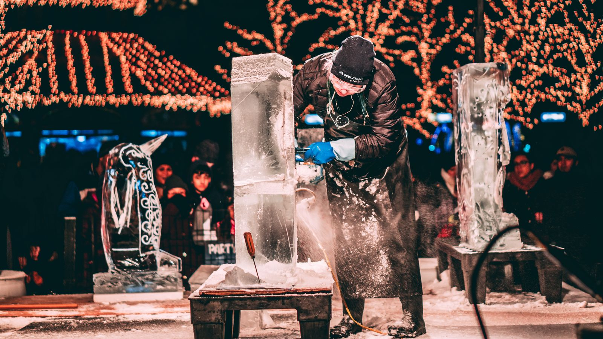

The carver · Antti Korpela, 44, Rovaniemi
Twelve years keeping
cold in boxes. Then this.
Before the saws there were compressors. I spent twelve years as a refrigeration technician on industrial cold stores — keeping cold in, at scale, through summers. Then I started putting it on tables instead.
Sheet 05 · The story
The technician is still in charge
The first competition was 2014, entered on a dare from a cold-store colleague: one block, a borrowed saw, unplaced. It is still on the record — the register counts 14 competitions and 8 unplaced finishes, and this was the first of the eight. What the refrigeration years gave me was not carving skill; that came later and slower. It gave me the sheet. I plan ice the way you commission a cold store: loads calculated, tolerances stated, failure modes written down before anyone is standing in front of the thing.
Since 2019 I carve as a team of two with Pekka Salmi — the rates in Table C1 are team rates, and the second pair of hands is in every figure on this site. We work the winter circuit from November to March: competitions when invited, festival installations, live carving for events that want the making watched. The rest of the year is drawings, deposits and other people's summers.
Warm ice is just water with ambitions. We plan for the water.

Sheet 06 · The working page
How a commission runs
The drawing — designed for the melt
Every piece starts as a 1:10 drawing made for its forecast, not despite it. Forms stay bold; detail is placed where the cold reaches last and cut at the depth the band requires — 12 mm standard, 25 mm when the forecast is warm. If the drawing cannot survive its own melt table, the drawing changes, not the table.
The blocks
Clear blocks are ordered three weeks out and grown over three days. On site they temper for two hours before a saw touches them. Rule one of Case File 03 stands over this step: no install starts until the truck is on site.
The carve plan
Hours come from Table C1 and are printed on a plan the client signs: what is carved on which day, in which order, with the install deadline counted back from the opening. The planner on the home sheet is the same arithmetic, unhidden.
The install
Barrier at 1.5 m before the first block moves. Hoist or two people for every lift. Level, pin where the rules require it, light from the plinth. Then the piece is the client's — and the weather's.
The melt
The piece stands its promised window, and then it does what ice does. If it outlives the event, the contract's demolition clause applies — the crew takes it down safely rather than leaving a weakening structure to chance. Photographs are yours; the hours were the piece.
Sheet 07 · The honesty page
Temporary is not a defect
It is the medium, and the contract says so in the first paragraph — before the fee, before the drawing. A client who wants permanence is a client for a stonecarver, and I will happily recommend two.
Placings are printed exactly. “Award-winning” is a phrase for people who came second and are shy about it. This practice came second in February 2026 and fifth of nine in February 2025, and both are on the register at the same size as the wins.
The weather basis: the fee buys the carving; the sky owns the lifespan. Windows are promised against the printed melt table for the forecast band. If the week runs warmer than forecast, the piece melts on the table's schedule, not the brochure's — and above +3 °C the promised window halves in the written quote, before any deposit is taken.
Safety is working law, not a disclaimer: chainsaws and chisels stay behind a barrier at 1.5 m at all times; no member of the public enters the carve zone, whatever the photo opportunity; blocks move by hoist or by two people; eye and ear protection for every carve hour; nobody carves alone. These lines survived Case File 03. They are not negotiable at any fee.
Terms: 40% deposit on booking, balance on install. Competitions are entered a season ahead; installations need three weeks for the blocks. Cancellation by weather call — mine, made against the melt table — moves the deposit to a new date once, in full. Cancellation by collapse has happened once; the client paid for the blocks only, and the rule is printed in Case File 03.
Still reading? Then you are the right kind of client. Book a carve →